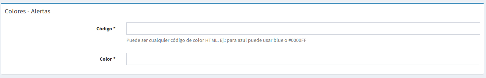

Capítulo 4 Catálogos
Las siguientes opciones están ubicadas en el menú principal Catálogos
4.1 Fuente de datos
Figura 4.1 Fuente de datos
- Contacto: Nombre de la persona que proporciona datos.
- Establecimiento: Organismo al que pertenece el contacto.
- Correo electrónico: Correo electrónico oficial del contacto.
- Número telefónico: Número telefónico del contacto.
- Cargo: Cargo que ocupa el contacto dentro del organismo al que pertenece.
4.2 Responsable de datos

Figura 4.2 Responsable de datos
4.3 Responsable indicador

Figura 4.3 Responsable de indicador
4.4 Clasificación según uso

Figura 4.4 Clasificación según uso
- Código: Clave con el que será identificado de manera técnica.
- Descripción: Nombre de la clasificación según uso. Indica el uso para el que puede estar destinado un indicador.
- Comentario: Nota o comentario que se quiera agregar, opcional.
4.5 Clasificación técnica

Figura 4.5 Clasificación técnica
- Código: Clave con el que será identificado.
- Descripción: Nombre de la Clasificación técnica. Esta es una subdivisión de la clasificación según uso.
- Comentario: Nota o comentario que se quiera agregar, opcional.
- Clasificación Según Uso: Es la clasificación según uso a la que pertenece.
4.6 Significado de campos
Se utiliza para identificar de manera estándar los datos provenientes de los orígenes. Por ejemplo en una base de datos el campo puede llamarse fecha_nacimiento, en otra puede llamarse fecha_nac y en ambos casos se refiere a lo mismo.

Figura 4.6 Significado campo
- Código: Identificador del significado.
- Descripción: Nombre del significado
- Utilizado para costeo: Marque esta casilla, si el significado será exclusivo para formularios de costeo.
- Describirá campos de catálogo: Aquellos campos de tablas catálogos como, llave primaria, llave foránea, entre otros.
- Catálogo asociado: Asociar un catálogo a un significado permitirá cargar otros datos por ejemplo que el campo sea una llave foránea y los demás datos se encuentren en una tabla catálogo. Ej.: código de municipio, y en la tabla catálogo se encontrará el nombre del municipio.
- Tipos de gráficos permitidos: Se debe elegir los tipos de gráficos que se pueden usar sobre este campo
4.7 Colores - Alertas

- Código: Para crear colores y usarlos posteriormente en la definición de rangos de alertas, aquí ingresará un código del color en formato usado en HTML.
- Color: Nombre que se mostrará para el color
Figura 4.7 Significado campo